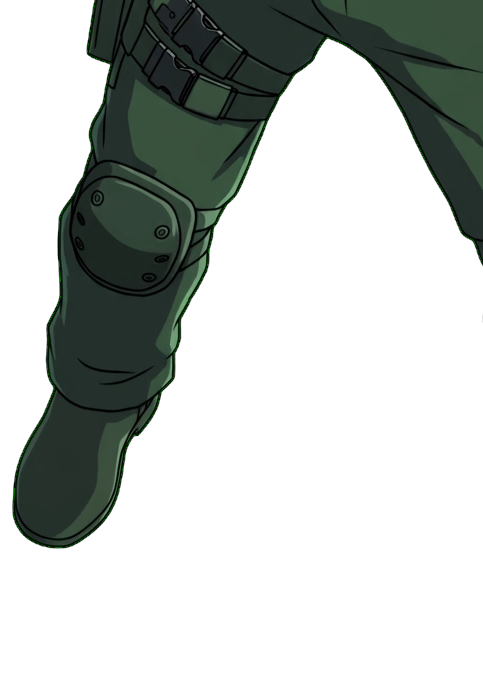
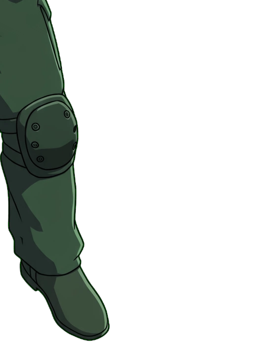
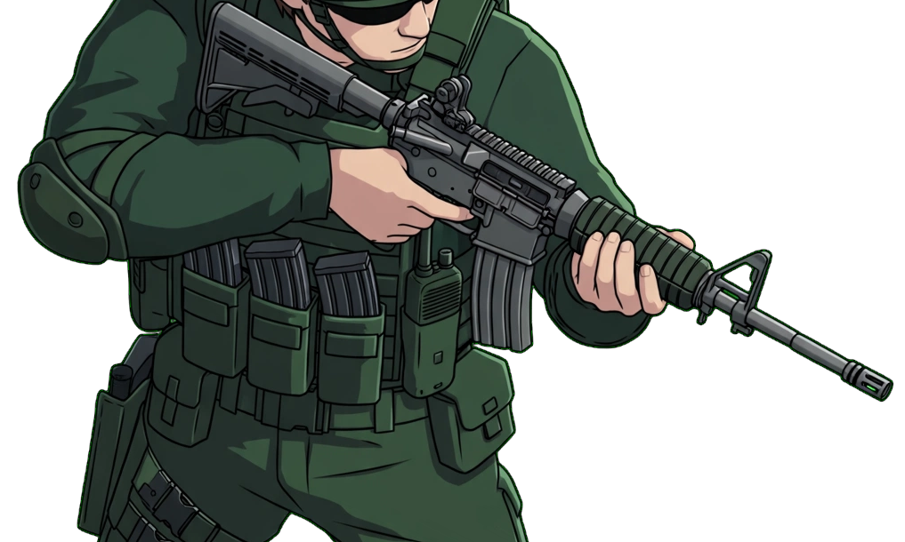
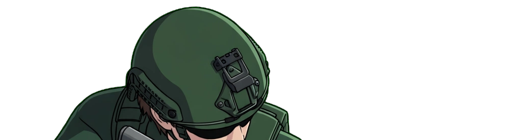
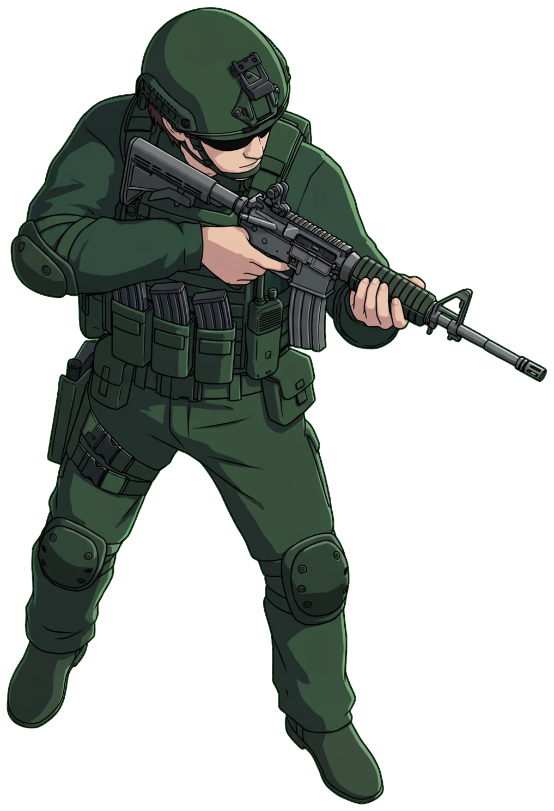

走路循环（骨骼动画：双腿摆动 + 身体起伏）
AI 生成图片精灵 + 去绿背景 + 拆件骨骼动画。左边是走路循环，右边是游戏内实际大小。





hero_full.png — 整图透明精灵，直接贴进游戏就能用hero_head.png / hero_torso.png / hero_leg_l.png / hero_leg_r.png — 拆件：头 / 身体（含手臂和步枪）/ 左腿 / 右腿把主角精灵从代码绘制换成 PNG 贴图： - 加载 hero_full.png（透明底）作为主角待机精灵，用 drawImage 绘制 - 走路动画改用骨骼动画：hero_leg_l.png / hero_leg_r.png 绕髋关节（左腿约 241,789 / 右腿约 724,789，按 1017×1489 坐标）反向摆动 ±15°，hero_torso.png 和 hero_head.png 同步上下起伏 10px，周期 0.62 秒 - 其余系统（光照、手电、打击感、UI）保持 2026-spec.md 不变